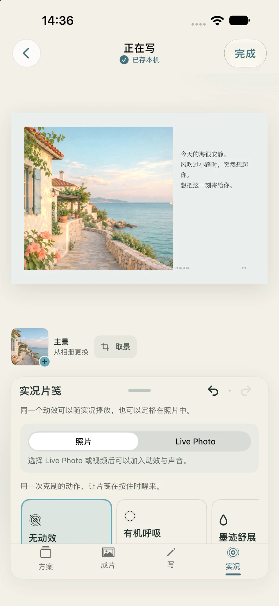
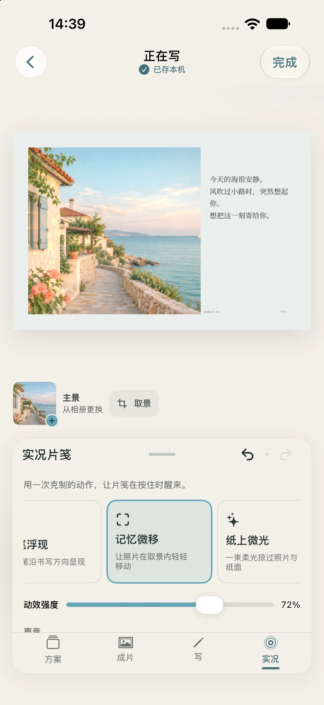
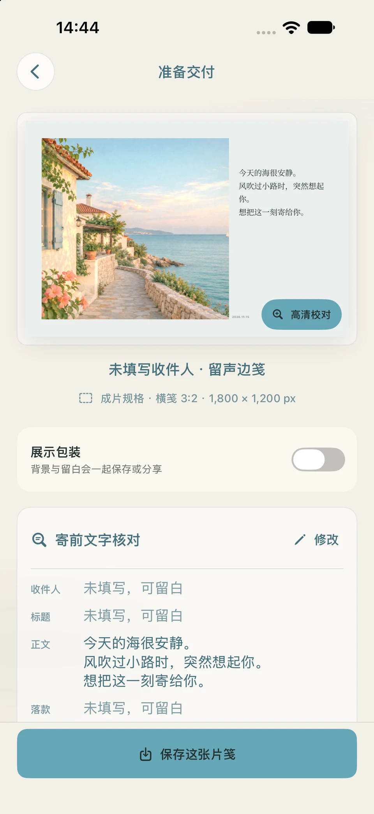
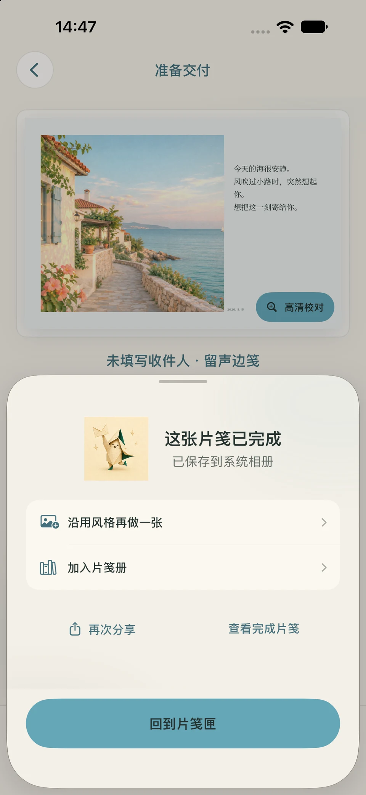

让这张片笺动起来
把前一篇教程里的同一张片笺，继续做成可以播放动态的 Live Photo。先看实际成品，再跟着截图找到格式与动效入口。
先完成一张静态片笺，再继续下面四步。录音是可选项，本例先做无声动态；如果要加入自己的声音，请看文末的声音与权限说明。
下载本例主图，跟着做一张1.选择 Live Photo
先完成照片、寄语、版式和纸张，再点底部实况，把交付形式切到Live Photo。本例继续使用前一篇教程里的同一张片笺。
完成后检查：界面显示已开启 Live Photo。静态“照片”只保存画面，不会携带动态或录音。


2.挑一种轻柔动态
横向浏览动效。本例选记忆微移，让照片在取景里轻轻移动。用动效强度控制变化，再查看预览，留意主体与画缘。
完成后检查：动态是为了帮助表达。若变化抢走了照片和寄语的注意力，就降低强度或换一种方式。


3.确认后保存
点完成进入准备交付，检查图文。想保留动态时，回到实况面板确认仍选中Live Photo，再点保存这张片笺。
完成后检查：等待高清成片生成和系统相册写入。不要把“正在准备”或“等待相册结果”当作保存成功。


4.到相册检查播放
看到已保存到系统相册后，在系统照片中打开这张 Live Photo，检查预期的动态。若你加入了录音，也要检查音量与声音。
完成后检查：先确认本机成品正确，再尝试分享。接收 App 与发送方式需要保留 Live Photo，才可能完整播放。



制作时可能遇到的问题
想加入自己的声音，怎么操作？
在实况面板向下找到“声音”。未授权时可先点“下一步”，按系统提示决定是否允许麦克风，再按住录音；完成后先试听。本例演示的是无声动效，没有录制麦克风音频。拒绝麦克风权限也可以继续制作无声实况。
为什么发给对方后只剩静态照片？
部分接收 App 或发送方式会只保留静态画面。先在系统照片中确认本机 Live Photo 的动态与声音，再核对接收方的支持情况。重要内容可先小范围试发，或另外保存一张静态照片备用。
为什么保存时出现解锁提示？
本例作品已有交付权益。首份免费资格、新作品解锁与 AI 次数各有自己的规则，首次领取免费交付权益需要联网。请以 App 内当前说明与 Apple 确认页为准；你可以先返回继续编辑。
普通制作会上传照片或寄语吗？
普通照片编辑、书写、草稿和录音在设备上处理。可选 AI 创作需要联网并单独确认，发送当前主景的处理副本，不随之上传笔迹、寄语和录音。主动分享成品时，内容会交给你选择的接收平台。
保存按钮点过了，为什么相册里没有？
先看是否已经出现“已保存到系统相册”。若仍在准备、权限未允许或保存失败，先按当前提示检查后重试。不要把取消或失败当作已经保存。
图示以 iPhone 界面为例，iPad 的入口位置可能不同，界面以所安装版本为准。示例照片为 AI 创作，截图中的操作区域由独立圈注标明，原始界面未被重绘。普通编辑与校对可先体验，实际交付权益和价格以 App 内及 Apple 确认页为准。